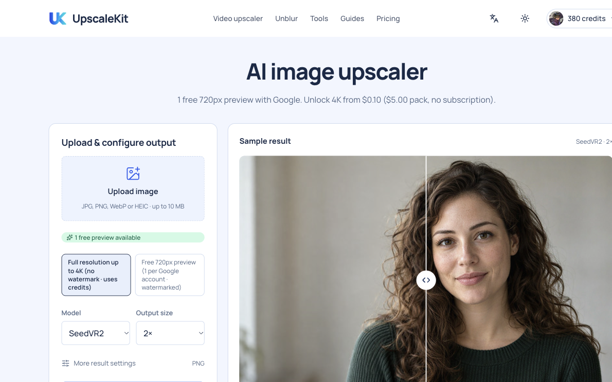

Enlarge and unblur photos with an AI upscaler you can compare before you pay
UpscaleKit runs two upscaling models on your own image, shows you the results side by side, and prices each export by output size. One-time credit packs start at $5.00 — no subscription.
Try it on upscalekit.netWhat is UpscaleKit?
UpscaleKit is a browser-based AI image upscaler. You upload a photo, pick an output size, and the tool reconstructs detail that the original resolution could not hold. It handles the two problems people usually run into with small images: they are too small for where they need to go, and they are soft or blurry in ways that simple resizing makes worse.
The part that separates it from most upscalers is the comparison step. Rather than committing to one model and hoping, UpscaleKit exposes the sample results first. You can look at how different models handle the same image — how much they sharpen, how much texture they invent, how they treat faces versus landscapes — and then decide which output is worth paying for. The price is shown before processing, calculated from the output size you selected.
Billing is per export. There is no monthly plan and no recurring charge. You buy a credit pack once, spend it on the images you actually want, and the credits stay in your account until used. Failed generations are returned to your balance rather than consumed.
This matters more than it sounds for a tool like this. Upscaling is inherently a guessing game: the model has to invent plausible detail that was never in the file. Two models can produce very different results on the same photo, and which one is better depends on whether you are enlarging a portrait, a product shot, a screenshot or an old family photo. Letting you see the difference before paying turns that guess into a choice.
Two models, different strengths
UpscaleKit exposes more than one upscaling model because no single model wins on every image. The comparison view lets you run the same photo through each and judge the output directly.
| Model | Character | Where it tends to do well |
|---|---|---|
| SeedVR2 | Video-derived restoration model; strong on compression artefacts and soft edges | Old photos, screenshots, images with visible compression blocks |
| Crystal | Detail-oriented upscaler; pushes texture and micro-contrast further | Product shots, textures, images where sharpness matters more than fidelity |
Neither is universally better. Crystal can look over-sharpened on skin; SeedVR2 can look soft on fine product detail. Running both on your specific image is the fastest way to decide.

How it works
Upload your image
Drop in a JPEG, PNG or WebP. The tool reads the original dimensions and shows what each output size will cost before you commit.
Pick a scale, format and model
Choose the target size and output format, then compare sample results across the available models on your own image.
Export what you need
Spend credits only on the renders you want to keep. Credits remain in your account, and failed generations are refunded.
Features
Model comparison first
See sample outputs from different models before spending credits, so the choice is based on your image rather than a marketing claim.
Price shown before processing
The cost of each export is calculated from the output size you select and displayed up front.
One-time credit packs
Packs start at $5.00. No subscription, no monthly renewal, and credits do not expire.
Multiple output formats
Export to the format your workflow needs, including formats with transparency support.
Browser-based
No desktop install and no mobile app. Works in a modern browser on desktop and phone.
Failed renders refunded
If a generation fails, the credits go back to your balance rather than being consumed.
Pricing
UpscaleKit prices by output size rather than by a flat per-image rate, because a 4× enlargement costs more compute than a 2× one. You see the exact price for your selected size before pressing generate.
| Pack | Best for | Billing |
|---|---|---|
| Starter | Trying the tool on a few images | One-time, from $5.00 |
| Standard | Regular use on product or portrait photos | One-time |
| Large | Batch work and larger output sizes | One-time |
Current pack sizes and per-pixel rates are listed on the pricing section of the main site. Credits are non-expiring and failed generations are refunded.
Frequently asked questions
Is there a subscription?
No. UpscaleKit sells one-time credit packs. Credits stay in your account and are spent per export.
How is the price calculated?
By output size. A larger enlargement costs more because it requires more processing. The exact price for your selected size is shown before you generate.
Which model should I use?
It depends on the image. SeedVR2 tends to handle compression artefacts and soft edges well; Crystal pushes more detail and texture. Run both on a sample and compare.
What file types are supported?
Common web image formats including JPEG, PNG and WebP. Supported formats and size limits are listed on the upload page.
Can it fix a badly blurred photo?
Partially. It can sharpen softness and reconstruct plausible detail, but it cannot recover information that was never captured — for example a face turned away from the camera or heavy motion blur.
What happens to my uploaded images?
Images are processed to generate your output and are handled according to the privacy policy on upscalekit.net. Contact support for deletion requests.
About this repository
This GitHub Pages site is the official public product page for UpscaleKit. It publishes a description of the product, its models and pricing model, plus contact details. It does not contain the website's source code, generation pipeline or deployment configuration — the application repository is private.
Nothing on this page implies that UpscaleKit is open source.